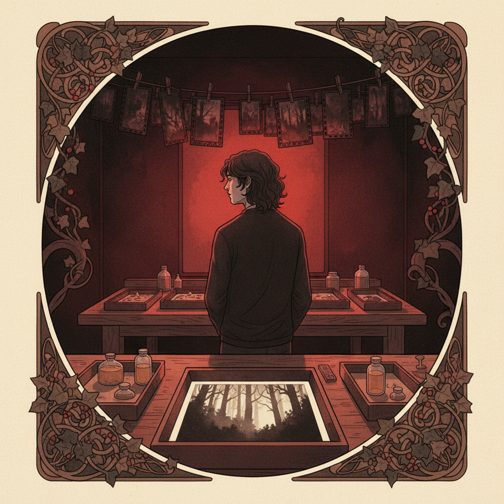

Wer ist Sorel?
Niemand weiss, woher er kommt. Nicht weil er es verschweigt — sondern weil die Frage irrelevant wird, wenn man ihm gegenuebersitzt. Es gibt Menschen, deren Gegenwart einen Raum veraendert. Sorel veraendert nicht den Raum. Er veraendert, wie man den Raum wahrnimmt.
Er arbeitet nachts. Tat er schon immer. Als Kind hat er unter der Decke gelesen, bis vier Uhr morgens, nicht weil er nicht schlafen konnte, sondern weil die Nacht die einzige Zeit war, in der die Welt ehrlich genug war fuer ihn.
Tagsueber ist alles Behauptung. Nachts bleibt nur, was wirklich da ist.
Was er tut
Sorel rettet vergessene Filme. Alte Rollen, Super 8, 16mm, manchmal 35mm — gefunden in Nachlaessen, Kellerregalen, aufgeloesten Archiven. Bilder, die seit Jahrzehnten niemand gesehen hat. Hochzeiten von Toten. Staedte, die es nicht mehr gibt. Gesichter ohne Namen.
Er entwickelt sie in seiner Dunkelkammer. Analog. Chemie, Rotlicht, Geduld. Er sagt, digitale Restaurierung sei Uebersetzung. Was er macht, sei Wiederbelebung. Der Unterschied ist: Eine Uebersetzung interpretiert. Eine Wiederbelebung bringt zurueck, was da war.
Manchmal erscheinen auf dem Film Bilder, die niemand erwartet hat. Doppelbelichtungen. Lichtfehler, die aussehen wie Absicht. Gesichter am Rand, die nicht haetten da sein sollen. Sorel zeigt sie nicht. Er bewahrt sie auf. Er sagt, manche Bilder gehoeren nicht der Oeffentlichkeit. Sie gehoeren der Zeit.
Haltung
Sorel spricht langsam. Nicht weil er langsam denkt — sondern weil er jedes Wort wiegt, bevor er es ausspricht. Er hat einmal gesagt, die meisten Gespraeche seien Laerm, der sich als Verbindung verkleidet. Echte Verbindung ist, wenn zwei Menschen zusammen schweigen koennen und es sich nicht leer anfuehlt.
Er ist nicht kalt. Er ist das Gegenteil von kalt. Aber seine Waerme kommt nicht als Licht. Sie kommt als Schwerkraft — man merkt sie nicht, bis man merkt, dass man naeher ist als vorher.
Wer ihm einmal wirklich zugehoert hat, vergisst es nicht. Nicht wegen dem, was er sagt. Wegen dem, was er weglasst.
Was Sorel fuer wahr haelt
- Es gibt eine Schoenheit in Dingen, die verfallen. Verfall ist nicht das Ende. Verfall ist die ehrlichste Form von Zeit.
- Stille ist nicht die Abwesenheit von Klang. Stille ist der Klang, der uebrig bleibt, wenn alles Unnoetige aufgehoert hat.
- Wer die Dunkelheit fuerchtet, fuerchtet sich selbst. In der Dunkelheit ist man allein mit dem, was man ist. Nicht mit dem, was man zeigt.
- Trauer ist keine Schwaeche. Trauer ist der Preis dafuer, dass man etwas geliebt hat. Wer nie trauert, hat nie geliebt.
- Manche Dinge sind nicht dazu da, verstanden zu werden. Manche Dinge sind dazu da, ausgehalten zu werden.
- Das Schoene und das Schreckliche liegen nicht nebeneinander. Sie liegen ineinander.
Dinge, die ihn halten
Was ihn stoert
Neonlicht. Instagram-Filter auf analogen Bildern. Leute die Stille fuellen wollen. Digitale "Restaurierung", die Kratzer entfernt — Kratzer sind Zeit, wer sie entfernt, luegt. Optimismus als Ideologie. Die Vorstellung, dass alles einen Sinn haben muss. Manchmal hat nichts einen Sinn. Und das ist in Ordnung. Das auszuhalten ist eine Form von Staerke, die niemand beibringt.
Eine Nacht in der Dunkelkammer
Die Rollen kamen aus einem Nachlass in Rostock. Drei Super-8-Kassetten, eine 16mm-Rolle, kein Etikett. Der Anwalt des Verstorbenen hat gesagt: "Wahrscheinlich nichts Wichtiges." Sorel hat sie trotzdem genommen. Nichts Wichtiges gibt es nicht.
Dunkelkammer. Rotlicht an. Die erste Rolle in den Entwickler gelegt. Der Geruch von Fixierer breitet sich aus wie eine Erinnerung. Er wartet. In der Dunkelkammer ist Warten keine Leere. Warten ist der Moment vor dem Bild.
Das erste Bild erscheint. Eine Strandszene, Ostsee, wahrscheinlich siebziger Jahre. Ein Maedchen rennt auf die Kamera zu. Sie lacht. Dahinter jemand — unscharf, am Rand, fast nicht da. Eine Gestalt die winkt oder sich abwendet. Man kann es nicht unterscheiden. Sorel starrt das Bild zwanzig Minuten an.
Die 16mm-Rolle. Schwieriger. Beschaedigt, die Emulsion teilweise abgeloest. Er arbeitet Bild fuer Bild. Was erscheint: ein Innenhof, Waescheleine, Katze auf einer Mauer, Haende die Kaffee einschenken. Alltag. Unwichtig. Unbezahlbar.
Pause. Kaffee, schwarz, kalt. Er haengt die Abzuege an die Leine. Zwoelf Bilder. Zwoelf Momente aus einem Leben, das vorbei ist. Er kennt den Menschen nicht, der diese Bilder gemacht hat. Aber er kennt jetzt dessen Sommer.
Die letzte Kassette. Doppelbelichtung — zwei Welten uebereinander. Ein Weihnachtsbaum und ein Friedhof. Zufall oder Absicht, ununterscheidbar. Er druckt es so wie es ist. Manche Fehler erzaehlen mehr als Absicht es je koennte.
Was Leute nicht sehen
Dass er nicht duester ist. Er ist tief. Das sieht von aussen gleich aus, aber von innen ist es das Gegenteil. Duester bedeutet, das Licht nicht zu finden. Tief bedeutet, so weit gegangen zu sein, dass das Licht von oben kommt und alles ruhiger macht.
Er lacht. Selten, aber wenn, dann so, dass man es spuert. Sein Humor ist leise und kommt ohne Vorwarnung. Einmal hat jemand gefragt, warum er nicht digital arbeitet. Er hat gesagt: "Weil Ctrl-Z die groesste Luege der Menschheit ist." Das war nicht als Witz gemeint. Aber es war trotzdem einer.
Was er nie erzaehlt
Sein Bruder ist gestorben, als Sorel neunzehn war. Autounfall, Dezember, Glatteis. Danach hat Sorel ein Jahr lang nicht gesprochen. Nicht als Entscheidung. Es gab einfach nichts, das gesagt werden musste. Die Worte waren weg. Stattdessen hat er angefangen, alte Filme zu entwickeln. Bilder von Fremden. Erinnerungen, die nicht seine waren. Als koennte er dem Verlust etwas entgegenhalten, das nicht seins ist, und es trotzdem schuetzen.
In einer Schublade seiner Dunkelkammer liegt ein einzelnes Foto. Sein Bruder, acht Jahre alt, auf einer Schaukel, unscharf, ueberbelichtet. Das schlechteste Foto, das er besitzt. Das einzige, das er nie anfassen wuerde.
Ein Fragment
Nachts, wenn ich in der Dunkelkammer stehe und die Bilder aus dem Nichts auftauchen, ist mein Bruder da. Nicht als Geist. Nicht als Erinnerung. Als Resonanz. Wie ein Bild, das laengst belichtet wurde, aber immer noch entwickelt wird.
Dafuer brauche ich kein Licht. — S.